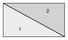
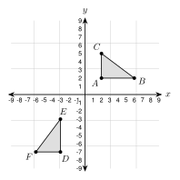
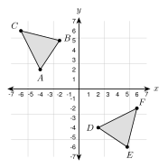
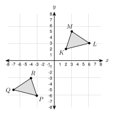

4.1 - Congruent Figures and Rigid Motions
A shelf maker cuts a board along its diagonal. The cut makes two triangles.

Lay piece 1 over piece 2 and they match exactly. They have the same size and the same shape. Figures like this are congruent. In this lesson you learn how to tell when figures are congruent. You also use matching parts to find missing lengths and angles.
Printable Guided Notes for this lesson (fill-in notes to print and write on)
🔥 Warm Up
Reflect \((3, -2)\) over the \(y\)-axis.
Find the distance between \((1, 2)\) and \((4, 6)\).
Solve \(3x - 2 = x + 10\).
👥 Learn Together
4.1.1 - Congruent Figures
- Two figures are congruent if one can be moved onto the other with rigid motions.
- Rigid motions are translations, reflections, and rotations. They keep every length and every angle the same.
- Congruent figures have the same size and the same shape.
- A dilation changes the size. It can not show that figures are congruent.
Example 1: Find the rigid motions

Is \(\triangle DEF\) congruent to \(\triangle ABC\)? \(A(2, 2)\), \(B(6, 2)\), \(C(2, 5)\), \(D(-3, -7)\), \(E(-3, -3)\), \(F(-6, -7)\).
Step 1: Rotate \(90^\circ\) counterclockwise about the origin. \((x, y) \rightarrow (-y, x)\).
$A’ = $ \((-2, 2)\), $B’ = $ \((-2, 6)\), $C’ = $ \((-5, 2)\)
Step 2: Translate by \((x - 1, y - 9)\).
$A’’ = $ \((-3, -7)\), $B’’ = $ \((-3, -3)\), $C’’ = $ \((-6, -7)\)
The points land on \(D\), \(E\), and \(F\). Both motions are rigid, so the triangles are congruent.
Example 2: Same shape is not enough
Amira says \(\triangle ABC\) and \(\triangle GHI\) are congruent because they have the same shape. \(\triangle ABC\) has sides \(3\), \(4\), \(5\). \(\triangle GHI\) has sides \(6\), \(8\), \(10\). Is she right?
No. Every side of \(\triangle GHI\) is 2 times as long as the matching side of \(\triangle ABC\).
A dilation with scale factor 2 moves one onto the other. A dilation is not a rigid motion, so the triangles are not congruent.
A figure is reflected over the \(x\)-axis and then translated 4 units left. Is the image congruent to the original? Why?
A figure is dilated with scale factor \(\frac{3}{2}\). Is the image congruent to the original? Why?
Yes. A reflection and a translation are both rigid motions. They keep size and shape.
No. A dilation changes the size. It is not a rigid motion.
4.1.2 - Corresponding Parts and Congruence Statements
- Corresponding parts are the sides and angles that match when one figure is moved onto the other.
- In a congruence statement, the order of the letters matters. In \(\triangle ABC \cong \triangle FDE\), \(A\) matches \(F\), \(B\) matches \(D\), and \(C\) matches \(E\).
- So \(\overline{AB}\) matches \(\overline{FD}\), and \(\angle A\) matches \(\angle F\).
- Tick marks on sides and arcs on angles show which parts are congruent.
Example 3: Match the parts

\(\triangle ABC \cong \triangle FDE\). Name every pair of corresponding parts.
Sides: \(\overline{AB}\) and \(\overline{FD}\), \(\overline{BC}\) and \(\overline{DE}\), \(\overline{AC}\) and \(\overline{FE}\).
Angles: \(\angle A\) and \(\angle F\), \(\angle B\) and \(\angle D\), \(\angle C\) and \(\angle E\).
Check with the marks. One tick is on \(\overline{AB}\) and \(\overline{FD}\). Two ticks are on \(\overline{BC}\) and \(\overline{DE}\). Three ticks are on \(\overline{AC}\) and \(\overline{FE}\).
\(\triangle JKL \cong \triangle MNP\). Which side matches \(\overline{KL}\)?
Which angle matches \(\angle P\)?
\(\overline{NP}\)
\(\angle L\)
Example 4: Find the mistake
Kofi looks at the marks in the figure above. He writes \(\triangle ABC \cong \triangle DEF\). Find his mistake. Write a correct statement.
The marks show that \(\angle A\) matches \(\angle F\), not \(\angle D\).
Kofi wrote the letters in the order he saw them. The statement must follow the marks.
Correct statement: \(\triangle ABC \cong \triangle FDE\)
\(\triangle ABC \cong \triangle DEF\) and \(\triangle ABC \cong \triangle FDE\) say different things. Always match the letters in the same positions.
4.1.3 - Using Corresponding Parts
- Corresponding parts of congruent figures are congruent. Matching sides have the same length. Matching angles have the same measure.
- To find a missing part, find its corresponding part. Then write an equation.
Example 5: Find \(x\) and \(y\)
\(ABCD \cong EFGH\). \(AB = 3x - 2\) and \(EF = x + 10\). \(m\angle C = (4y + 6)^\circ\) and \(m\angle G = 78^\circ\). Find \(x\), \(y\), and \(AB\).
\(\overline{AB}\) matches \(\overline{EF}\), so \(3x - 2 = x + 10\).
\(2x = 12\), so $x = $ 6
$AB = 3(6) - 2 = $ 16
\(\angle C\) matches \(\angle G\), so \(4y + 6 = 78\).
\(4y = 72\), so $y = $ 18
\(2a + 5 = 17\), so \(a = 6\). \(3b - 4 = 59\), so \(b = 21\).
A factory stamps out thousands of the same bracket. Each bracket must be congruent to the plan, or the bolt holes will not line up.
4.1.4 - Congruence on a Grid
- On a grid, find the rigid motions that move one figure onto the other.
- Or use the distance formula on every side. If one pair of matching sides has different lengths, the figures are not congruent.
- If all three sides of one triangle match all three sides of another, the triangles are congruent. You will see why in 4.2.
Example 6: Show with distances

Show that \(\triangle ABC \cong \triangle DEF\). \(A(-4, 2)\), \(B(-2, 5)\), \(C(-6, 6)\), \(D(2, -4)\), \(E(5, -6)\), \(F(6, -2)\).
$AB = = $ \(\sqrt{13}\) and $DE = = $ \(\sqrt{13}\)
$BC = = $ \(\sqrt{17}\) and $EF = = $ \(\sqrt{17}\)
$AC = = $ \(\sqrt{20}\) and $DF = = $ \(\sqrt{20}\)
All three pairs match, so \(\triangle ABC \cong \triangle DEF\).
Example 7: Show they are not congruent

Are \(\triangle GHI\) and \(\triangle JKL\) congruent? \(G(2, 2)\), \(H(6, 2)\), \(I(2, 5)\), \(J(-7, -3)\), \(K(-3, -3)\), \(L(-7, -7)\).
$GH = $ 4 and $JK = $ 4. They match.
$GI = $ 3 but $JL = $ 4. They do not match.
One pair of sides is different, so the triangles are not congruent. Both are right triangles, but the sides decide.
\(PQ = 4\), \(PR = 3\), \(QR = 5\). \(XY = 4\), \(XZ = 3\), \(YZ = 5\). All three pairs match, so \(\triangle PQR \cong \triangle XYZ\).
✍️ Practice On Your Own
Use the figure for problems 1 to 3.

Write a congruence statement for the two triangles.
Which side matches \(\overline{ST}\)?
Which angle matches \(\angle Z\)?
\(\triangle JKL \cong \triangle MNP\). Complete.
Which side matches \(\overline{JL}\)?
Which angle matches \(\angle N\)?
If \(JK = 9\), then $MN = $
If \(m\angle L = 48^\circ\), then $mP = $
Write another correct statement.
\(ABCD \cong WXYZ\). Complete.
Which side matches \(\overline{CD}\)?
Which angle matches \(\angle B\)?
Write the statement that starts with \(BCDA\).
If \(AD = 7\), then $WZ = $
Find the variable and the measure.
\(\triangle ABC \cong \triangle DEF\). \(AB = 5x - 4\) and \(DE = 2x + 8\). Find \(x\) and \(AB\).
\(\triangle ABC \cong \triangle DEF\). \(m\angle A = (4x + 2)^\circ\) and \(m\angle D = (6x - 18)^\circ\). Find \(x\) and \(m\angle A\).
\(ABCD \cong EFGH\). \(BC = 3y + 1\) and \(FG = 2y + 9\). Find \(y\) and \(BC\).
\(ABCD \cong EFGH\). \(m\angle D = (2z + 10)^\circ\) and \(m\angle H = (5z - 20)^\circ\). Find \(z\) and \(m\angle D\).
\(\triangle PQR \cong \triangle STU\). \(PQ = x + 7\), \(ST = 3x - 5\), and \(QR = 2x\). Find \(x\) and \(TU\).
Use the figure for problems 18 and 19.

Describe rigid motions that move \(\triangle KLM\) onto \(\triangle PQR\).
Show that \(KL = PQ\) with the distance formula.
Use distances to decide.
\(A(0, 0)\), \(B(6, 0)\), \(C(0, 8)\) and \(D(2, 2)\), \(E(2, 8)\), \(F(10, 2)\). Are \(\triangle ABC\) and \(\triangle DEF\) congruent?
\(G(1, 2)\), \(H(4, 2)\), \(I(4, 6)\) and \(J(-2, -1)\), \(K(-2, -5)\), \(L(-6, -5)\). Are \(\triangle GHI\) and \(\triangle JKL\) congruent?
Real problems.
Hnin’s folding table has two halves. Each half is a rectangle 48 inches by 30 inches. Which rigid motion moves one half onto the other when the table folds? Are the halves congruent?
Esperanza’s plan for a bracket is a triangle with sides 5 in, 12 in, and 13 in. A bracket is cut with sides 5 in, 12 in, and 14 in. Is it congruent to the plan? Explain.
Find the mistake.
A rectangle 6 ft by 4 ft and a rectangle 8 ft by 3 ft both have an area of 24 square feet. Moses says they are congruent. Find his mistake.
Thu says two triangles are congruent because both have angles \(40^\circ\), \(60^\circ\), and \(80^\circ\). Find her mistake.
Use the figure for problems 26 and 27.

Which pairs of parts do the marks tell you are congruent?
The triangles look the same. Can you write \(\triangle ABC \cong \triangle DEF\) from the marks? Explain.
Test practice
\(\triangle LMN \cong \triangle RST\). Which pair of corresponding parts is correct?
A. \(\overline{LM}\) and \(\overline{ST}\)
B. \(\angle M\) and \(\angle T\)
C. \(\overline{MN}\) and \(\overline{ST}\)
D. \(\angle N\) and \(\angle R\)A student wants to show that two figures are congruent. Which is the best evidence?
A. They have the same area.
B. They have the same number of sides.
C. A sequence of translations, reflections, and rotations maps one onto the other.
D. They have the same angle measures.
Challenge
\(A(0, 0)\), \(B(4, 0)\), and \(C(1, 3)\). Find two different points \(D\) below \(\overline{AB}\) so that \(\triangle ABD \cong \triangle ABC\). Check one with distances.
Is a square with side 5 always congruent to a rhombus with side 5? Draw a counterexample.